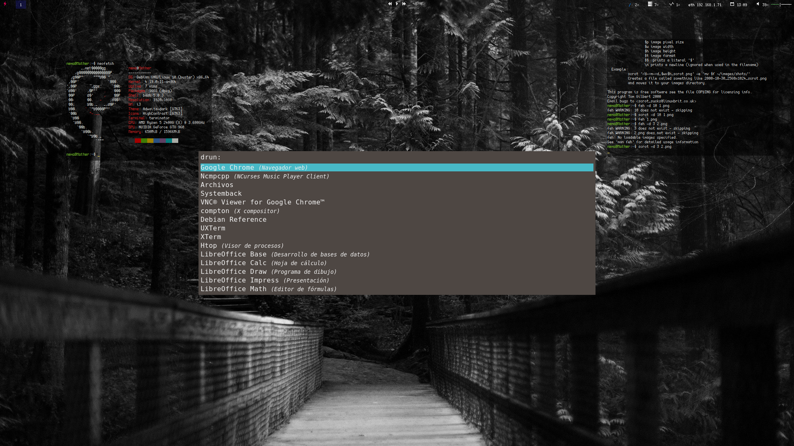
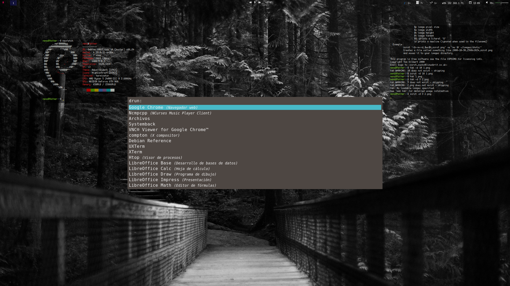
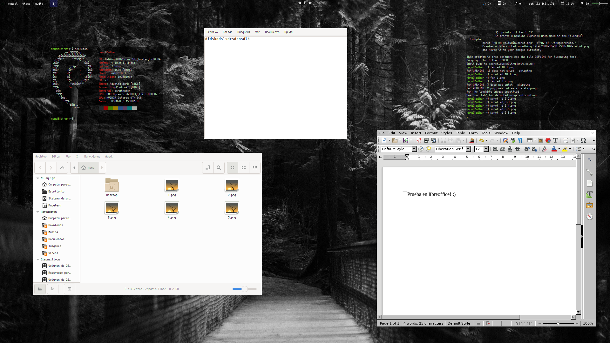
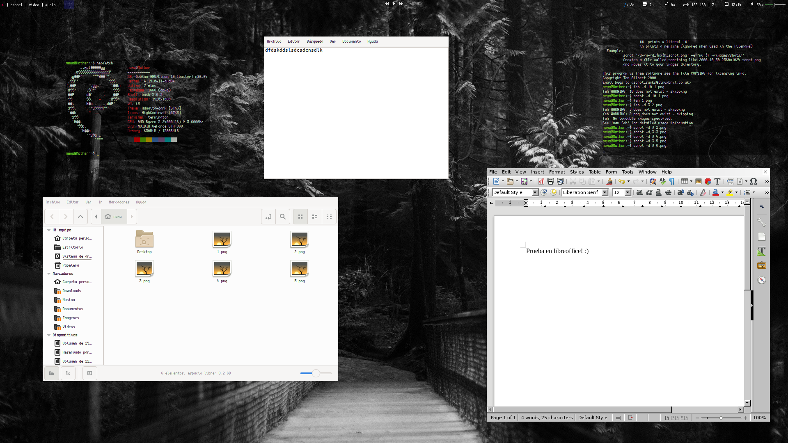

NemOs
Buen dia viajante, te preguntaras que es NemOs
Derivado del latin nemo = nadie
Os = Operative System
Eh creado
Buen dia viajante, te preguntaras que es NemOs
Derivado del latin nemo = nadie
Os = Operative System
Como grabar ISO |
Como instalar Sistema en disco |
Requisitos
|
|


 



 
